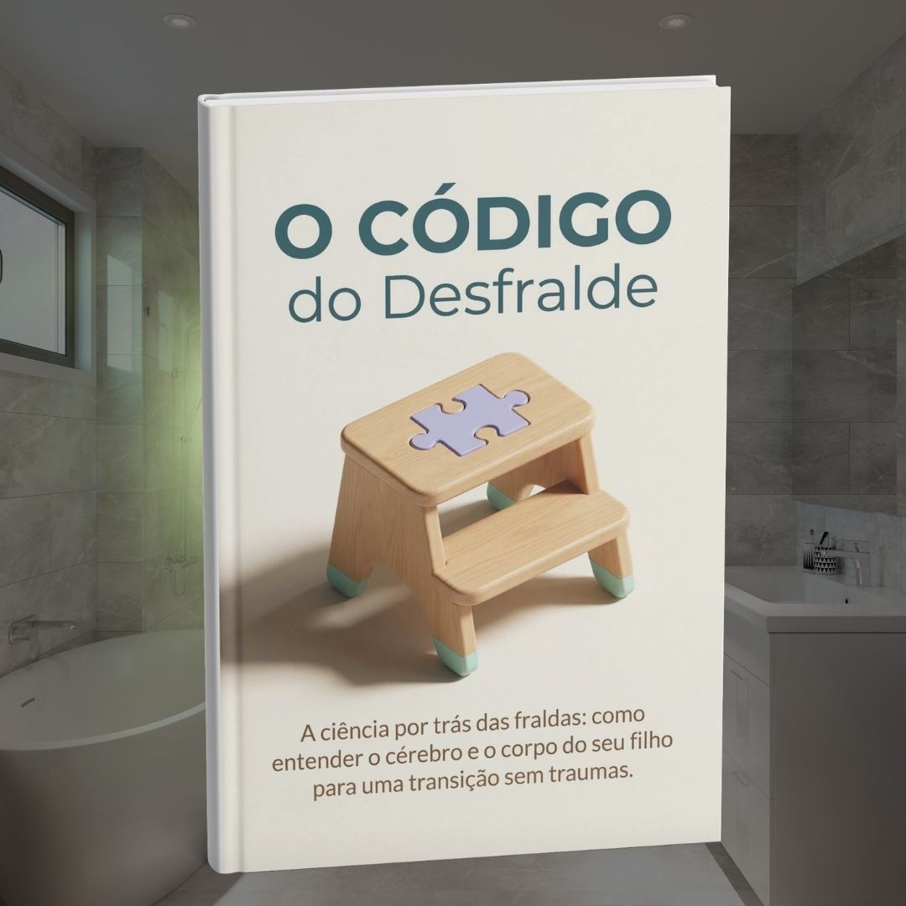

Nós não sabemos quem inventou a ideia de que o desfralde é um campeonato de obediência, ou um medidor implacável de competência materna.
Mas desconfiamos seriamente que foi alguém que nunca teve que esfregar um tapete às pressas enquanto tenta acalmar uma criança em crise.

Se você tem passado as últimas semanas — ou meses — perguntando "quer fazer xixi?" a cada cinco minutos, comprando penicos musicais e recolhendo roupas sujas com um sentimento pesado de frustração, você está travando uma guerra que não pode vencer.
E o motivo é chocantemente simples: você está lutando contra a fiação elétrica de um ser humano.
A sociedade convenceu você de que tirar a fralda é uma questão de disciplina. A mensagem silenciosa é que, se o seu filho ainda não usa o vaso sanitário, ele é teimoso. Ou pior, que você está falhando.
Por favor, respire fundo e solte esse peso agora mesmo. A culpa não é sua. E o seu filho não está desafiando você.
O que acontece no banheiro não é um teste de QI infantil. É biologia pura.
Dentro do corpo do seu filho, o cérebro tenta enviar comandos elétricos para os músculos que seguram o xixi e o cocô. Mas, se esses nervos ainda não estiverem encapados por uma substância isolante chamada "mielina", o comando simplesmente se perde no meio do caminho.
É como tentar lavar a calçada com uma mangueira cheia de furos. A água jamais chegará com força na ponta.
Você gritaria com uma mangueira furada? Você colocaria a mangueira de castigo?
Obviamente não.
Então, por que nos frustramos tanto com a anatomia em formação dos nossos filhos? Porque ninguém nos ensina como o corpo deles realmente funciona.
O cenário se torna ainda mais delicado — e exige um respeito ainda mais profundo — se a sua criança for autista ou tiver TDAH.
Para um cérebro neurodivergente, o banheiro não é apenas um cômodo da casa. É uma câmara de eco aterrorizante, com azulejos gelados, luzes brancas agressivas e um buraco no chão que faz um barulho ensurdecedor quando a água desce.
Exigir que eles simplesmente "sentem e façam" não é educação. É ignorar um ataque sensorial.
Nós não escrevemos mais um guia cheio de "diquinhas" de internet ou cronogramas de três dias que só geram constipação, traumas e regressões. Nós traduzimos a neurociência, a biologia e o manejo sensorial para o idioma do afeto e da rotina prática.
Como funciona a mielinização e por que entender isso acaba com a ansiedade da "idade certa".
Como ler os sinais silenciosos de prontidão que o seu filho envia (mesmo que ele não diga uma única palavra).
Por que o intestino preso é o maior sabotador do desfralde e como usar a Escala de Bristol para evitar dores e fobias.
Como transformar o banheiro em um ambiente de segurança extrema, com adaptações simples para crianças atípicas e típicas.
Normalmente, cartas como esta terminam com uma contagem regressiva piscando ou uma promessa milagrosa. Nós preferimos tratar a sua inteligência com o respeito que ela merece.
Editora Elevar Humano
De R$ 19,90
Por R$ 4,99
Se a segunda opção soa como o alívio que a sua casa precisa hoje, clique no botão abaixo. Nós prometemos entregar a você um material que fará os seus ombros relaxarem logo no primeiro capítulo.
SIM. EU QUERO ENTENDER O CÓDIGO E CONDUZIR O DESFRALDE SEM TRAUMAS.🔒 Pagamento 100% Seguro pela Hotmart